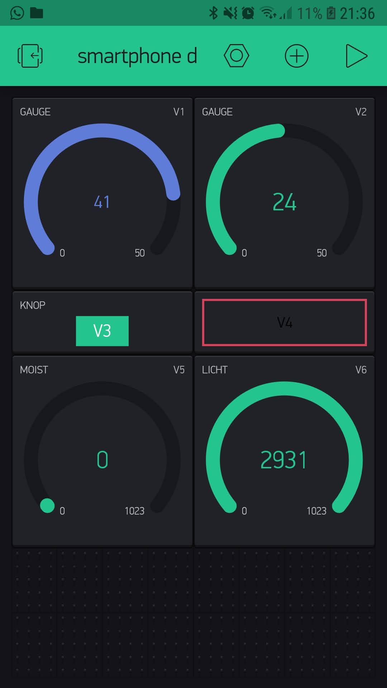
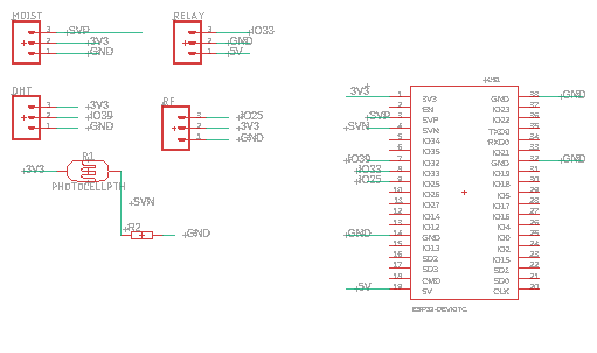
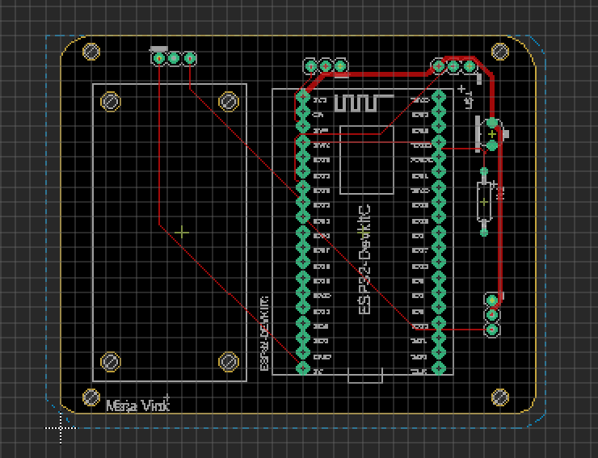

In dit filmpje is het proces te zien van het maken van mijn waterpompsysteem. Het begon natuurlijk met de technology lessen, waarin ik meerdere dingen heb mogen doen. Het begrijpen en programmeren van code is de hoofdlijn van de technology lessen geweest. Daarnaast heb ik geleerd om mijn lampjes en relay te controleren door middel van de Blynx app. In de foto hieronder is te zien hoe dit eruit zag in mijn app. Daarna heb ik in Eagle mijn eigen plaatje mogen ontwerpen. Het ontwerp hiervan valt hieronder ook te zien.
  